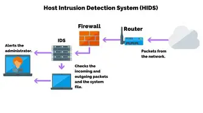

Page 1 of 9
Welcome to Module two of the Cybersecurity Awareness Training course. In this module you'll learn how human influences can be tricked and trick others to fall for scams.
You will learn common threat actors, what motivates them to do what they do, threat vectors, and attack surfaces.
You will learn multiple types of vulnerabilities that can be exploited by attackers, and how to avoid making mistakes that can lead to a security breach. Also mitigation techniques and how to secure your enterprise.
Understand why cybersecurity matters and recognize the role each person plays in protecting information and systems.
Page 2 of 9
A couple of threat actors are nation-state actors that work for the government and conduct cyberattacks legally. A hackivist is someone who uses hacking to support a political or social cause.
An insider threat is a security risk to a company that comes from the people inside it. Shadow IT is an attack inside a company without the knowledge of anyone around or the IT department.
Organized Crime in cybersecurity is a structured group ran like a business to make illegal money and scam people.
Attackers are motivated by multiple different factors these are data (data exfiltration), espionage, disrupt service, blackmail, money, personal beliefs, war, revenge or even ethical reasons.
Page 3 of 9
An attack vector is a specific pathway or method a threat actor uses to gain unauthorized access to a system, network or data. Common Vectors include phishing emails, compromised credentials, software vulnerabilities, misconfigured cloud services, and insider threats.
Attacks can hide malicious code in images using steganography, files you click on and run, in voice calls they can grab your information using social engineering. Vulnerable software and devices laying around can also be attack surfaces.
You cannot always determine if an image or file is malicious just by looking at it. However, the context in which you encounter the file is crucial. Consider the source of the file—did it come from a trusted website or an unknown sender? Always verify the origin and think critically before opening or downloading files.
On the next page we will do a practice social engineering attempt on you. I hope you can not be fooled by me.
Page 4 of 9
From: Supportservice@account-upddt-secure.com
SUBJECT: Click here to apply to this Software Developer position
Dear applicant,
We saw that your skills match well with our job description with Amazon at our Software Developer position.
If yOu want to join a strong team and learn valuable skills in your feild then apply here: freeCandy.org
Thanks for your time and I hope to hear back from you soon!
Always check your email carefully for urgency, spelling errors, and never click on links in emails. If you never contacted the person before then be extra careful, not everyone is your friend online.
Page 5 of 9
Here are different types of vulnerabilities that attackers can take advantage of.
| Attack Surface | Vulnerability |
|---|---|
| Application | Memory injection, Buffer overflow, malicious updates, race conditions, TOC (time of check) and TOU (time of use). |
| Web-based | SQL injection, Cross-site scripting (XSS), Credential stuffing. |
| Hardware | Firmware, End-of-life, Legacy. |
| Virtualization | Virtual Machine escape, Resource reuse. |
| Supply Chain | Service provider, Hardware and software provider. |
| Mobile Device | Side loading, Jailbreaking. |
Go into more detail about the topics above below:
| Term | Definition | Specific Example |
|---|---|---|
| Memory Injection | An attacker places malicious code or data into a program's memory so the program executes or processes it in an unintended way. | An attacker exploits a vulnerable application to inject shellcode into memory, causing the application to execute commands controlled by the attacker. |
| Buffer Overflow | Occurs when a program writes more data into a memory buffer than the buffer can hold, potentially overwriting nearby memory. | A program allocates 10 bytes for a username but accepts 1,000 bytes. The extra data overwrites memory and could allow an attacker to execute code. |
| Malicious Updates | An attacker compromises an application's update mechanism and distributes malicious software disguised as a legitimate update. | An attacker compromises a software vendor's update server and distributes an update containing malware to thousands of customers. |
| Race Condition | A security problem that occurs when the outcome depends on the timing or order of two or more operations. | A website checks whether a user has permission to download a file, but before the download occurs, the attacker changes the file or permissions. |
| TOC/TOU (Time of Check/Time of Use) | A specific type of race condition where something is checked for safety or permission and then changes before it is actually used. | A program checks that a file is safe. Before the program opens it, an attacker replaces it with a symbolic link to a sensitive file. |
| Term | Definition | Specific Example |
|---|---|---|
| SQL Injection (SQLi) | An attacker inserts malicious SQL commands into an application's input so the database performs unintended actions. | A login form expects a username, but an attacker manipulates the input so the application's SQL query returns unauthorized account information. |
| Cross-Site Scripting (XSS) | An attacker injects malicious JavaScript into a webpage that is then executed in another user's browser. | Someone posts a malicious script into a vulnerable comment box. When another user views the comment, the browser executes the attacker's script. |
| Credential Stuffing | An attacker uses stolen username/password combinations from one breach to attempt logins on other websites. | Someone's password was leaked from a gaming website. The attacker tries that same email/password combination on other websites. |
| Term | Definition | Specific Example |
|---|---|---|
| Firmware | Software embedded directly into hardware that controls how the hardware operates. Firmware can contain vulnerabilities that attackers exploit. | A router has outdated firmware containing a vulnerability that allows an attacker to remotely execute commands. |
| End-of-Life (EOL) | Hardware or software that the manufacturer no longer supports or provides security updates for. | A company continues using an operating system after official support has ended, leaving newly discovered vulnerabilities potentially unpatched. |
| Legacy | Older hardware or software that is still being used even though newer technology is available. | A bank still operates a 15-year-old server application because replacing it would be expensive and complicated. |
| Term | Definition | Specific Example |
|---|---|---|
| Virtual Machine Escape | An attack where someone inside a virtual machine breaks out of the VM and gains access to the host or potentially other VMs. | An attacker compromises a VM and exploits a hypervisor vulnerability to execute code on the physical host. |
| Resource Reuse | Sensitive information from one user, process, or VM remains in a resource that is later given to another user, process, or VM. | A cloud provider gives a new customer a virtual disk that previously belonged to another customer, but the old customer's data was not properly erased. |
| Term | Definition | Specific Example |
|---|---|---|
| Service Provider | A third-party company that provides services your organization depends on. If that provider is compromised, your organization may also be affected. | A company's payroll provider is hacked, exposing employee information belonging to the company's customers. |
| Hardware Provider | A company that supplies physical equipment. A compromised or tampered device can introduce security risks before it reaches your organization. | A malicious component is secretly added to a network device during manufacturing or distribution. |
| Software Provider | A company that develops software your organization uses. A compromise of the vendor can result in malicious software being distributed to customers. | An attacker compromises a software vendor's build or update infrastructure and distributes a malicious update to customers. |
| Term | Definition | Specific Example |
|---|---|---|
| Side Loading | Installing an application from outside the device's official or approved app store/distribution system. | An Android user downloads an APK from an unknown website instead of Google Play and unknowingly installs malware. |
| Jailbreaking | Removing or bypassing restrictions imposed by the mobile device manufacturer or operating system so the user can obtain greater control over the device. | An iPhone user jailbreaks the device to install software that Apple normally does not allow. |
Page 6 of 9
Some more attack surfaces are unsupported systems and applications, open service ports, default credentials, managed service providers, and unsecure networks like wireless, wired, and bluetooth.
In cybersecurity agent based systems are modeled on a pull communication style. The client is the central server that pulls data from agents on demmand. Agentless Security is the same but without agents or bots carring out the scanning of the network for you, this operates in a push communication style. You push associated software to a remote system on a periodic basis.
Types of Human vectors would be phishing, vishing, smishing, disinformation, impersonation, pretexting, watering hole, Typosquatting, etc.
Page 7 of 9
You can divide the network into segments to stop attacks from having full access to your network via segmentation. You can impliment an access control list, allow list and ecrypt your network to block out attackers.
Least privilege technique is a technique that give users only the permissions that they need to do their job and nothing more. Also decommissioning devices is a good way to keep devices up to date when updates become unavailable.
You can also use host-based firewalls, HIPS (host based intrusion prevention) to block unwanted atttackers. Disable unused ports, change passwords regularly, and remove unnecessary software.

Page 8 of 9
Organizations use several layers of security controls to reduce cyber risk. No single control can stop every attack, so companies combine multiple approaches to create a strong defense.
| Attacks | Examples |
|---|---|
| Physical attacks | Brute force, radio frequency indentification, and enviromental |
| Network Attacks | Distributed denial-of-service, amplified, reflected, DNS attacks, wireless, On-path, credential replay, and malicious code. |
| Application attacks | Injection, Buffer overflow, Replay, Privilege escalation, forgery, and directory traversal. |
| Cryptographic and password attacks | Downgrade, Collision, Birthday, Spraying, and brute force. |
Indicators of attack are, account lockout, concurrent session usage, blocked content, out of cycle logging, resource consumption, etc.
Page 9 of 9
You have successfully completed Module 2: Understanding Human Factors and Social Engineering.
Cybersecurity is constantly evolving. Continue building your knowledge through trusted learning resources.
Cybersecurity Beginner Resources (CISA)